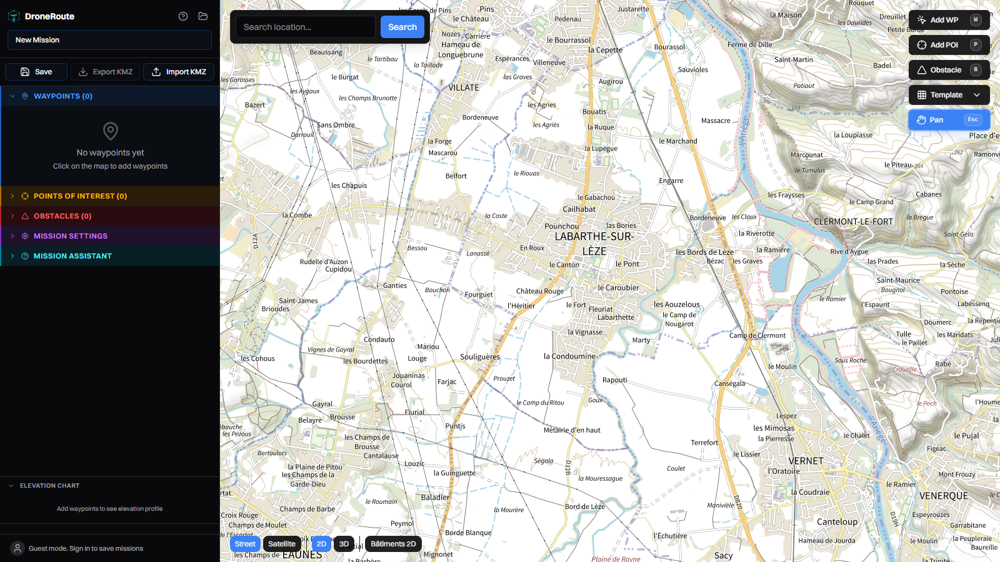
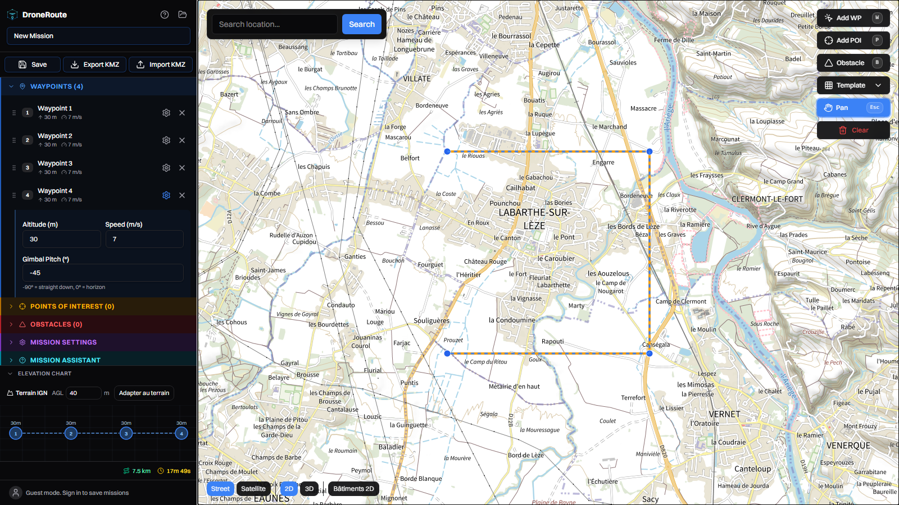
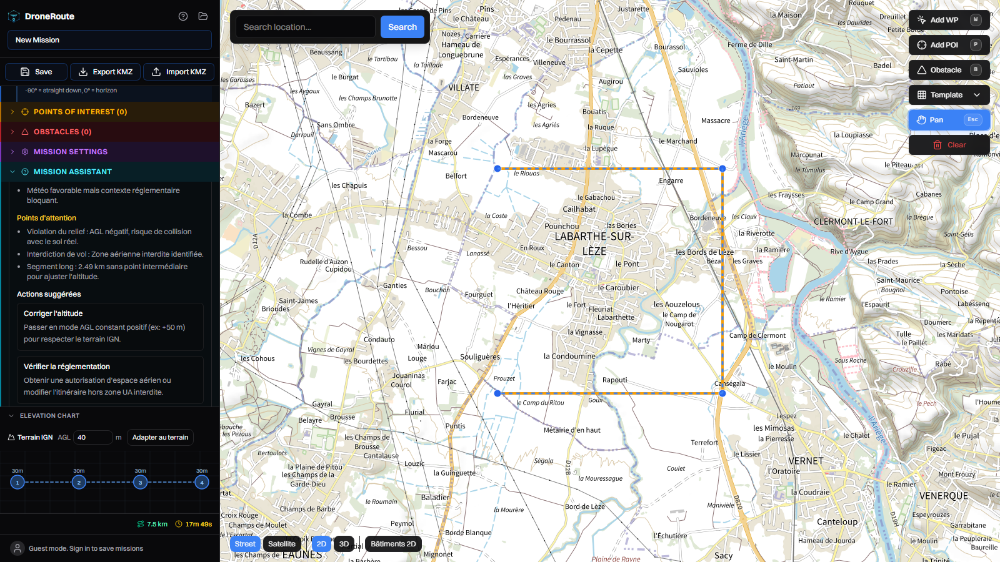
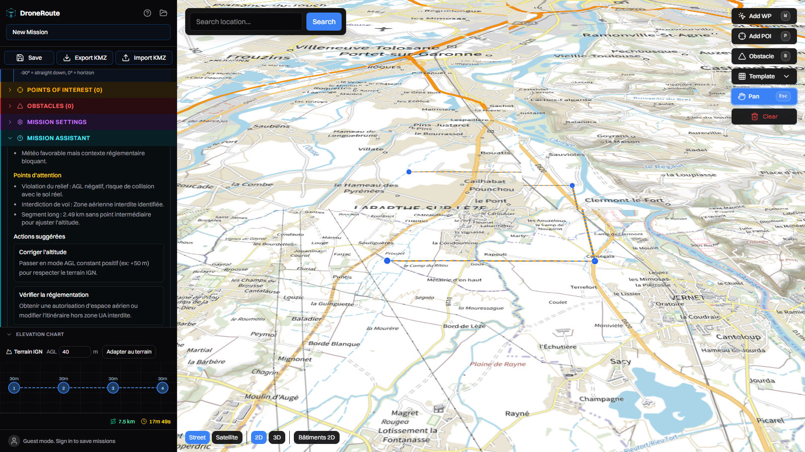

Parcours : accueil Plan IGN → BD ORTHO → trace mission → analyse IA
locale → vue 3D → drapage terrain → export KMZ.
Video — parcours complet.Bienvenue, bascule Street/Satellite, trace de 4 waypoints, passage
3D, retour 2D.

1. Plan IGN v2 (Géoplateforme WMTS, Licence Ouverte).Fond par defaut, sans clef, mis a jour depuis la BD TOPO. Modale de
bienvenue fermee via « Get started ».2. BD ORTHO 20 cm (bouton Satellite).Orthophoto IGN de la zone de chantier — remplace l'ancien fond Esri
proprietaire.

3. Mission tracee (4 waypoints, 7,5 km).Liste des waypoints, profil d'elevation et bouton
« Adapter au terrain » (drapage AGL via MNT IGN RGE
ALTI).

4. Analyse IA locale (Ollama + Qwen, via Mission assistant →
Analyser).Le modele detecte un AGL negatif (vol a 30 m sous le
relief), une zone aerienne interdite et un segment trop long
— et recommande le drapage AGL constant. Meteo, parcelle, PLU et
DGAC sont injectes dans le contexte.

5. Vue 3D (bouton 3D).Camera inclinee + relief MapLibre ; la mission reste lisible pour
controler les degagements.6. Retour 2D.La suite : Elevation chart → Adapter au terrain pour draper
le vol, puis Export KMZ vers DJI Pilot 2.